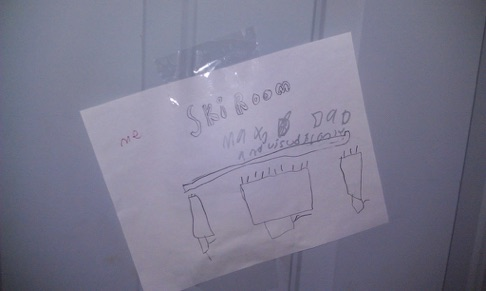
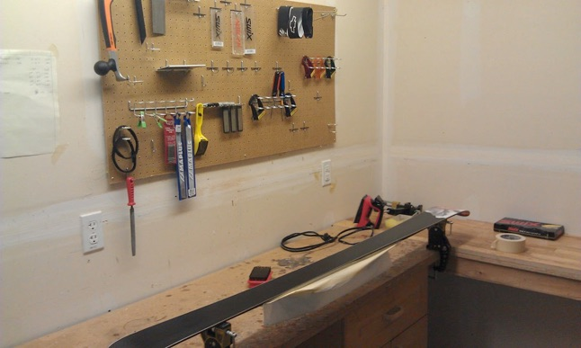

2010/2011 Season

So after multiple tunes last year, I decided to start tuning my own skis. (And Allis, and Max’s...and got Gunter into it...)
Did a bunch of research; the best wax site out there is www.artechski.com. Did my first wax and ptex stuff from there...and had a good “basic instruction” guide from http://www.skituning101.com.
Two other good sites for supplies:
Max was a huge helper...his favorite thing was to help clean the wax off the scrapers...although with supervision, he could wax his own skis. Here’s a pic of our setup:
tuning Stuff

Started off just by doing straight drip ptex and waxing. Went to edges next, but just using stones, rather than filing ‘em (although I probably will practice the filing part this summer). Also got some core shot repair tools, and played a little with those...I like the soldering iron style better than the gun style (but that’s probably my EE background showing through).
